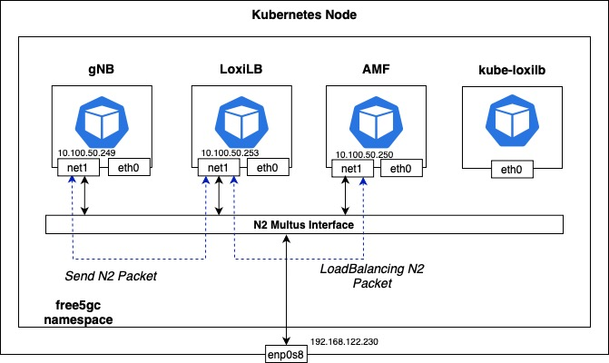

Install Free5GC with LoxiLB NGAP load-balancing
This blog discusses how LoxiLB, an open-source, eBPF-based load balancer, addresses challenges in NGAP (NG Application Protocol) Layer 7 load balancing within 5G networks with Free5GC, an open-source implementation of a 5G core network (5GC). Traditional Layer 4 load balancing can lead to issues such as AMF (Access and Mobility Management Function) overload and problematic handovers, especially when gNBs (next-generation Node Bs) serve a large number of UEs (User Equipments). LoxiLB overcomes these challenges by comprehending both NGAP and NAS (Non-Access Stratum) protocols, enabling effective distribution of UEs across stateless AMFs and facilitating seamless handovers. More information about this topic can be found here.
This post provides a step-by-step deployment guide using open-source solutions like Free5GC, LoxiLB, and UERANSIM, all orchestrated in a cloud-native fashion with Kubernetes, to demonstrate this functionality.
Overview
LoxiLB is deployed as a load balancer in front of multiple AMFs in a Free5GC deployment to ensure high availability and seamless failover for NGAP connections originating from a gNB (UERANSIM). By proxying NGAP traffic, LoxiLB ensures that if an AMF instance goes down, the gNB's NGAP connection remains intact and continues to function without interruption. Additionally, when a failed AMF instance recovers, LoxiLB replays cached NG Setup requests, etc to restore connectivity automatically.
Flow Diagram
1. Normal Operation:
- UERANSIM (gNB) establishes an NGAP connection through LoxiLB.
- LoxiLB load balances NGAP traffic across multiple Free5GC AMFs.
- The NG Setup procedure is completed with the selected AMF.
2. AMF Failure Handling:
- If an AMF fails, LoxiLB detects the failure and reroutes the gNB's NGAP session, along with its associated UEs, to a healthy AMF.
- The gNB does not experience connection loss because LoxiLB maintains the session.
3. AMF Recovery & NGAP Replay:
- When the failed AMF is restored, LoxiLB replays cached NG Setup requests and other related messages.
- The AMF resumes handling NGAP traffic without requiring the gNB to reinitiate the setup.
+-------------------+
| UERANSIM gNB |
| (Simulated gNB) |
+-------------------+
|
NG Setup Req | NGAP Signaling
v
+-------------------+
| LoxiLB |
| (NGAP Proxy/LB) |
+-------------------+
/ | \
+----------------+ +----------------+ +----------------+
| AMF 1 (UP) | | AMF 2 (DOWN) | | AMF 3 (UP) |
| (Processing) | | (Failure State) | | (Processing) |
+----------------+ +----------------+ +----------------+
|
AMF 2 Recovers |
v
+----------------+
| AMF 2 (UP) |
| (Cache Replay) |
+----------------+
This architecture significantly enhances 5G network reliability by ensuring the NGAP signaling plane remains operational even when individual AMF instances experience failures, making it ideal for production 5G deployments requiring high availability
Prerequisites
Install K8s (MicroK8s)
Install MicroK8s by referring to the guide https://free5gc.org/guide/7-free5gc-helm/
After installing MicroK8s, enable Multus as well, and then additionally run the following command. (It is required to to create a PV to run Free5GC properly)
microk8s enable hostpath-storage
Install gtp5g kernel module
To run free5gc, you need the gtp5g module. The following commands install the basic packages for compiling kernel modules.
sudo apt -y install git gcc gcc-12 g++ cmake autoconf libtool pkg-config libmnl-dev libyaml-dev
Then, install the module by referring to the gtp5g page.
Topology

The core networks (N2, N3, N4, N6, N9) of free5gc are configured using Multus. Therefore, each core pod of free5gc has an additional Multus network interface in addition to the default interface (eth0) provided by K8s CNI (default: calico).
gNB uses the N2 network to access AMF. Therefore, it is reasonable for LoxiLB to also have an N2 network interface to load balance the traffic.
In this document, free5gc is deployed as a K8s pod using Helm. At the same time, LoxiLB is also deployed to K8s in in-cluster mode. At this time, LoxiLB does not operate in host mode, but uses the pod network and is assigned the N2 Multus network interface.
gNB sees the external IP of the load balancer service as the AMF IP and forwards the traffic. LoxiLB can load balance the traffic to AMF.
In this document, K8s is installed as a single node in a VM environment. The Host VM has an enp0s8 interface and an IP of 192.168.122.230.
Install free5gc (using Helm)
Download the free5gc Helm package with the following command.
git clone https://github.com/free5gc/free5gc-helm.git
cd free5gc-helm/charts
Modify free5gc/values.yaml
Modify the free5gc/values.yaml file to suit your environment.
vi free5gc/values.yaml
The part that needs to be modified in the values.yaml file is the masterIf of each network. The VM used as a host in the current document has an enp0s8 interface, and that interface becomes the masterIf of the Multus interface. Therefore, modify it as follows:
n2network:
enabled: true
name: n2network
type: ipvlan
**masterIf: enp1s0**
subnetIP: 10.100.50.248
cidr: 29
gatewayIP: 10.100.50.254
excludeIP: 10.100.50.254
Modify other networks (n3, n4, n6, n9) in the same way.
Next, find AMF in the global section and change service.ngap.enabled to true and service.ngap.type to LoadBalancer.
amf:
n2if: # NGAP
ipAddress: 10.100.50.249
service:
ngap:
**enabled: true**
name: amf-n2
port: 38412
nodeport: 31412
protocol: SCTP
**type: LoadBalancer**
Modify amf-service.yaml
Next, modify the amf-service.yaml file.
vi free5gc/charts/free5gc-amf/templates/amf-service.yaml file
Add the following annotation to metadata: And specify “loxilb.io/loxilb” in spec.loadBalancerClass.
metadata:
name: {{ include "free5gc-amf.fullname" $ }}-{{ $.Values.global.amf.service.ngap.name }}
labels:
project: {{ $.Values.global.projectName }}
nf: {{ .name }}
annotations:
**loxilb.io/probetype: "none"
loxilb.io/lbmode: "fullproxy"
loxilb.io/epselect: "n2"
loxilb.io/multus-nets: "n2network-free5gc-helm-free5gc-amf"**
spec:
type: {{ $.Values.global.amf.service.ngap.type }}
**loadBalancerClass: "loxilb.io/loxilb"**
A description of the annotation can be found on kube-loxilb’s github site.
Run helm install command
Deploy free5gc with the following command:
helm install -n free5gc free5gc-helm ./ \
--set global.n6network.masterIf=enp0s8 \
--set global.n6network.subnetIP="192.168.122.0" \
--set global.n6network.gatewayIP="192.168.122.1" \
--set free5gc-upf.upf1.n6if.ipAddress="192.168.122.251" \
--set free5gc-upf.upf2.n6if.ipAddress="192.168.122.252" \
--set free5gc-upf.upfb.n6if.ipAddress="192.168.122.253" \
--set global.n2network.masterIf=enp0s8 \
--set global.n3network.masterIf=enp0s8 \
--set global.n4network.masterIf=enp0s8 \
--set global.n9network.masterIf=enp0s8
enp0s8 specified in global.n6network.masterIf is the interface name of the Host VM.
The IP address specified in global.n6network.subnetIP & global.n6network.gatewayIP is the network subnet and gateway information used by enp0s8. upf1, upf2, and upfb use the same subnet as the corresponding subnet to enable external communication. Therefore, the IPs of upf1, upf2, and upfb must be IPs that are not used by other machines.
Since this document uses only one interface, the option is set to use enp0s8 as the master for other networks as well. (Same as specified in the values.yaml file)
If the deployment is successful, the following pods are created.
kubectl get pods -n free5gc
NAME READY STATUS RESTARTS AGE
free5gc-helm-free5gc-amf-amf-8667945876-qcwlk 1/1 Running 0 5d2h
free5gc-helm-free5gc-ausf-ausf-64c684f546-crgjt 1/1 Running 0 5d2h
free5gc-helm-free5gc-chf-chf-7c7bb88fb7-xkpnj 1/1 Running 0 5d2h
free5gc-helm-free5gc-dbpython-dbpython-59684d749-6rppv 1/1 Running 0 5d2h
free5gc-helm-free5gc-nef-nef-759b6dfbdb-xrn5r 1/1 Running 0 5d2h
free5gc-helm-free5gc-nrf-nrf-6c8cc8b69-wwzf8 1/1 Running 0 5d2h
free5gc-helm-free5gc-nssf-nssf-5c9d76fc69-f4vfj 1/1 Running 0 5d2h
free5gc-helm-free5gc-pcf-pcf-78f7dbc67d-29xk8 1/1 Running 0 5d2h
free5gc-helm-free5gc-smf-smf-5dbcc8565c-2sj7w 1/1 Running 0 5d2h
free5gc-helm-free5gc-udm-udm-68ff9fbd47-hh2z7 1/1 Running 0 5d2h
free5gc-helm-free5gc-udr-udr-5bd79d98f8-8gfzh 1/1 Running 0 5d2h
free5gc-helm-free5gc-upf-upf1-79d75db8cd-l26ch 1/1 Running 0 5d2h
free5gc-helm-free5gc-upf-upf2-67dcd99f89-l2jf5 1/1 Running 0 5d2h
free5gc-helm-free5gc-upf-upfb-794d46bbb8-nh8fh 1/1 Running 0 5d2h
free5gc-helm-free5gc-webui-webui-75c45c779c-9vvc7 1/1 Running 0 5d2h
mongodb-0 1/1 Running 0 5d2h
PVC is produced as follows:
kubectl get pvc -n free5gc
NAME STATUS VOLUME CAPACITY ACCESS MODES STORAGECLASS AGE
cert-pvc Bound pvc-dbc3f5ff-bdcc-4b06-bde3-462c3c96ec95 1Mi ROX microk8s-hostpath 5d2h
datadir-mongodb-0 Bound pvc-ba897e0c-9860-4d42-8bc7-9f0ceb1ff17b 6Gi RWO microk8s-hostpath 6d3h
For service, the amf service will be stuck in pending state. This is because loxilb has not been deployed yet.
kubectl get svc -n free5gc
NAME TYPE CLUSTER-IP EXTERNAL-IP PORT(S) AGE
free5gc-helm-free5gc-amf-amf-n2 LoadBalancer 10.152.183.91 <pending> 38412:31412/SCTP 5d2h
free5gc-helm-free5gc-amf-service ClusterIP 10.152.183.146 <none> 80/TCP 5d2h
free5gc-helm-free5gc-ausf-service ClusterIP 10.152.183.42 <none> 80/TCP 5d2h
free5gc-helm-free5gc-chf-service ClusterIP 10.152.183.254 <none> 80/TCP 5d2h
free5gc-helm-free5gc-nef-service ClusterIP 10.152.183.162 <none> 80/TCP 5d2h
free5gc-helm-free5gc-nssf-service ClusterIP 10.152.183.181 <none> 80/TCP 5d2h
free5gc-helm-free5gc-pcf-service ClusterIP 10.152.183.50 <none> 80/TCP 5d2h
free5gc-helm-free5gc-smf-service ClusterIP 10.152.183.206 <none> 80/TCP 5d2h
free5gc-helm-free5gc-udm-service ClusterIP 10.152.183.36 <none> 80/TCP 5d2h
free5gc-helm-free5gc-udr-service ClusterIP 10.152.183.95 <none> 80/TCP 5d2h
gnb-service ClusterIP 10.152.183.43 <none> 4997/UDP 5d2h
loxilb-egress-service LoadBalancer 10.152.183.211 llbanyextip 9999:31237/TCP 5d2h
loxilb-lb-service ClusterIP None <none> 11111/TCP 5d2h
mongodb ClusterIP 10.152.183.83 <none> 27017/TCP 5d2h
nrf-nnrf ClusterIP 10.152.183.176 <none> 8000/TCP 5d2h
webui-nbiling ClusterIP 10.152.183.56 <none> 2122/TCP 5d2h
webui-ncgf ClusterIP 10.152.183.180 <none> 2121/TCP 5d2h
webui-service NodePort 10.152.183.226 <none> 5000:30500/TCP 5d2h
Deploy LoxiLB
Save the following to a file named loxilb.yaml:
apiVersion: apps/v1
kind: DaemonSet
metadata:
name: loxilb-lb
namespace: free5gc
spec:
selector:
matchLabels:
app: loxilb-app
template:
metadata:
name: loxilb-lb
labels:
app: loxilb-app
annotations:
k8s.v1.cni.cncf.io/networks: '[ { "name": "n2network-free5gc-helm-free5gc-amf",
"interface": "n2", "ips": [ "10.100.50.253/29" ], "gateway": [ "10.100.50.254"
] }]'
spec:
#hostNetwork: true
dnsPolicy: ClusterFirstWithHostNet
tolerations:
- key: "node-role.kubernetes.io/master"
operator: Exists
- key: "node-role.kubernetes.io/control-plane"
operator: Exists
containers:
- name: loxilb-app
image: "ghcr.io/loxilb-io/loxilb:scp2"
imagePullPolicy: Always
command: [ "/root/loxilb-io/loxilb/loxilb", "--proxyonlymode" ]
ports:
- containerPort: 11111
securityContext:
privileged: true
capabilities:
add:
- SYS_ADMIN
---
apiVersion: v1
kind: Service
metadata:
name: loxilb-egress-service
namespace: free5gc
annotations:
loxilb.io/egress: "yes"
loxilb.io/probetype: "none"
loxilb.io/staticIP: "0.0.0.0"
spec:
type: LoadBalancer
loadBalancerClass: loxilb.io/loxilb
selector:
app: loxilb-app
ports:
- name: loxilb-egress
port: 9999
targetPort: 9999
protocol: TCP
---
apiVersion: v1
kind: Service
metadata:
name: loxilb-lb-service
namespace: free5gc
spec:
clusterIP: None
selector:
app: loxilb-app
ports:
- name: loxilb-app
port: 11111
targetPort: 11111
protocol: TCP
If you look at the annotations, you can see the k8s.v1.cni.cncf.io/networks entry. This is an option to assign the loxilb pod an N2 Multus network interface. The IP addresses are set to 10.100.50.253/29. If you changed the N2 network subnet, you should also change the IP addresses.
Deploy loxilb with the following command.
kubectl apply -f loxilb.yaml
You will also need to deploy kube-loxilb. Save the following to a file called kube-loxilb.yaml:
---
apiVersion: v1
kind: ServiceAccount
metadata:
name: kube-loxilb
namespace: kube-system
---
kind: ClusterRole
apiVersion: rbac.authorization.k8s.io/v1
metadata:
name: kube-loxilb
rules:
- apiGroups:
- ""
resources:
- nodes
verbs:
- get
- watch
- list
- patch
- apiGroups:
- ""
resources:
- pods
verbs:
- get
- watch
- list
- patch
- apiGroups:
- ""
resources:
- endpoints
- services
- namespaces
- services/status
verbs:
- get
- watch
- list
- patch
- update
- apiGroups:
- gateway.networking.k8s.io
resources:
- gatewayclasses
- gatewayclasses/status
- gateways
- gateways/status
- tcproutes
- udproutes
verbs: ["get", "watch", "list", "patch", "update"]
- apiGroups:
- discovery.k8s.io
resources:
- endpointslices
verbs:
- get
- watch
- list
- apiGroups:
- apiextensions.k8s.io
resources:
- customresourcedefinitions
verbs:
- get
- watch
- list
- apiGroups:
- authentication.k8s.io
resources:
- tokenreviews
verbs:
- create
- apiGroups:
- authorization.k8s.io
resources:
- subjectaccessreviews
verbs:
- create
- apiGroups:
- bgppeer.loxilb.io
resources:
- bgppeerservices
verbs:
- get
- watch
- list
- create
- update
- delete
- apiGroups:
- bgppolicydefinedsets.loxilb.io
resources:
- bgppolicydefinedsetsservices
verbs:
- get
- watch
- list
- create
- update
- delete
- apiGroups:
- bgppolicydefinition.loxilb.io
resources:
- bgppolicydefinitionservices
verbs:
- get
- watch
- list
- create
- update
- delete
- apiGroups:
- bgppolicyapply.loxilb.io
resources:
- bgppolicyapplyservices
verbs:
- get
- watch
- list
- create
- update
- delete
- apiGroups:
- loxiurl.loxilb.io
resources:
- loxiurls
verbs:
- get
- watch
- list
- create
- update
- delete
- apiGroups:
- egress.loxilb.io
resources:
- egresses
verbs: ["get", "watch", "list", "patch", "update"]
---
kind: ClusterRoleBinding
apiVersion: rbac.authorization.k8s.io/v1
metadata:
name: kube-loxilb
roleRef:
apiGroup: rbac.authorization.k8s.io
kind: ClusterRole
name: kube-loxilb
subjects:
- kind: ServiceAccount
name: kube-loxilb
namespace: kube-system
---
apiVersion: apps/v1
kind: Deployment
metadata:
name: kube-loxilb
namespace: kube-system
labels:
app: kube-loxilb-app
spec:
replicas: 1
selector:
matchLabels:
app: kube-loxilb-app
template:
metadata:
labels:
app: kube-loxilb-app
spec:
dnsPolicy: ClusterFirstWithHostNet
tolerations:
# Mark the pod as a critical add-on for rescheduling.
- key: CriticalAddonsOnly
operator: Exists
priorityClassName: system-node-critical
serviceAccountName: kube-loxilb
terminationGracePeriodSeconds: 0
containers:
- name: kube-loxilb
image: ghcr.io/loxilb-io/kube-loxilb:latest
imagePullPolicy: Always
command:
- /bin/kube-loxilb
args:
- --cidrPools=defaultPool=10.100.50.253/32
- --setRoles=0.0.0.0
- --setLBMode=1
resources:
requests:
cpu: "100m"
memory: "50Mi"
limits:
cpu: "100m"
memory: "50Mi"
securityContext:
privileged: true
capabilities:
add: ["NET_ADMIN", "NET_RAW"]
In cidrPools of args, we specified the 10.100.50.253/32 IP address used in loxilb above.
Deploy kube-loxilb with the following command.
kubectl apply -f kube-loxilb.yaml
After some time has passed since the deployment was completed, you can see that the external IP Address 10.100.50.253 has been assigned to the AMF service.
NAME TYPE CLUSTER-IP EXTERNAL-IP PORT(S) AGE
free5gc-helm-free5gc-amf-amf-n2 LoadBalancer 10.152.183.91 llb-10.100.50.253 38412:31412/SCTP 5d2h
Test
We will deploy ueransim for testing. The free5gc helm package includes ueransim by default. Modify ueransim's values.yaml file for deployment.
vi ueransim/values.yaml
As with free5gc, modify the masterIf for each network to suit your host environment. In this document, we use the enp0s8 interface of the host VM.
global:
#Global network parametes
n2network:
enabled: true
name: n2network
type: ipvlan
masterIf: enp0s8
subnetIP: 10.100.50.248
cidr: 29
gatewayIP: 10.100.50.254
excludeIP: 10.100.50.254
n3network:
enabled: true
name: n3network
type: ipvlan
masterIf: enp0s8
subnetIP: 10.100.50.232
cidr: 29
gatewayIP: 10.100.50.238
excludeIP: 10.100.50.238
Then, modify the amf.n2if.ipAddress entry to the external IP of the AMF service.
amf:
n2if: # NGAP
ipAddress: 10.100.50.253
Deploy ueransim with the following command:
helm install -n free5gc ueransim ./ueransim/
After that, you need to access the web UI and create a subscriber for UE. To access it, set up port forwarding with the following command.
kubectl port-forward svc/webui-service 5000:5000 --address 0.0.0.0
After that, access the web UI with the URL
When you access the web UI, a login page will appear. The default account is admin:free5gc.
After logging in, click the Create button in the SUBSCRIBERS menu and create a UE. (The basic information is already registered.)
After that, you can check that the UE is connected in the AMF log, and you can check that it is communicating externally with the following command.
kubectl exec -it -n free5gc deployment/ueransim-ue \
-- ping -I uesimtun0 8.8.8.8
Troubleshooting Points
PersistentVolume Issue
Sometimes, the pods of free5gc are in a pending state, so when you check the pvc, it mught also be in a pending state. In this case, you need to add the provisionor with the following command.
microk8s enable hostpath-storage
If you still have the same problem, refer to Create Persistent Volume in the free5GC Helm Installation - free5GC document and manually add two PersistentVolumes.
Issue in using K3s
Free5GC uses PersistentVolume, and uses ReadOnlyMany for accessModes.
Since K3s does not support this mode due to lightweight issues, please test using microk8s recommended in the official documentation.
Author(s) - BackGuyn Jung (LoxiLB), William Linn (Free5GC)